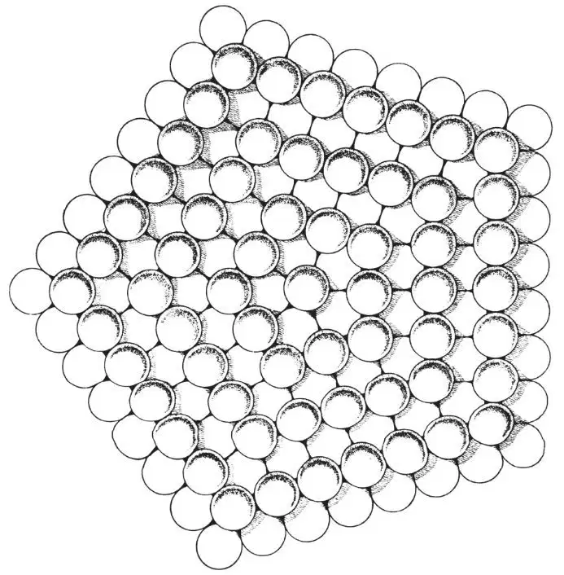
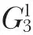

中文
中文B. G. Bagley
Editor’s Note
Crystals are forbidden from having five-fold symmetry on geometric grounds: it is impossible to pack pentagons without gaps. The discovery in 1984 of a metal alloy with apparent ten-fold symmetry seemed to challenge that idea, but this so-called quasicrystal proved to lack true crystallinity. This paper from B. G. Bagley describes, two decades earlier, another way to create five-fold symmetry from a dense, infinitely extended packing of spheres. The packing is not periodic in three dimensions, however, but has a definite centre. The following year, an example of Bagley’s scheme was reported for virus particles. Bagley also cites five-fold-symmetric clusters proposed by Desmond Bernal to exist in simple liquids, which were later invoked as possible nuclei of incipient quasicrystals. 中文
SUPPOSE a plane of hard spheres is constructed such that the spheres form concentric pentagons with an odd number of balls per pentagon side. A second plane of hard spheres is now constructed such that the spheres form concentric pentagons with an even number of spheres per pentagon side. If this second plane is placed in intimate contact with the first, with their five-fold axes coincident, there results a layer which, within the plane of the layer, can be continuously packed to infinity (Fig. 1). Identical layers can then be stacked one on another, with their five-fold axes coincident, to give an infinite packing along the five-fold axis. An infinite structure can thus be constructed the nucleus of which is a pentagonal dipyramid of seven spheres. 中文

Fig. 1. A layer of hard spheres based on a packing sequence of concentric pentagons. 中文
Following the foregoing packing sequence with polygons other than the pentagon results in other, well-known structures. The same sequence with squares yields cubic close packing1 and, with hexagons, primitive hexagonal. A difficulty arises when attempts are made to apply the exact sequence to triangles, because concentric triangles with an even (or odd) number of spheres per side cannot be made coplanar. It is important that, of these polygons, only the pentagon cannot form a regular tessellation and therefore, although it can be packed to infinity, it has a unique axis, the single five-fold rotation axis. 中文
An alternative way of generating the same pentagonal structure is as follows: Construct n (n = 1, 2, 3, … ∞) pentagonal pyramidal shells of hard spheres such that each face is an equilateral triangle of side length n (spheres). If shell 1 is placed in the cavity of shell 2 there results a pentagonal dipyramid of seven atoms. Likewise when shell 3 is placed on the structure there results a pentagonal dipyramid of twenty-three spheres. In fact, as each subsequent shell is placed on the growing structure there always results a pentagonal dipyramid bounded by close-packed planes, each face of which is an equilateral triangle with n (shell number) spheres to a side. This pentagonal dipyramid consists of five distorted tetrahedral the edges parallel to the five-fold axis being expanded by 5.15 percent. Within each tetrahedron the structure is body-centred orthorhombic with cell dimensions chosen such that the pentagonal dipyramid faces will be close packed and two adjacent tetrahedra will be joined by a coincidence boundary. These conditions yield a body-centred orthorhombic cell with dimensions (diameter of sphere=1.000), a=1.000, b=cot36°=1.3764, c=(22–csc236°)1/2=1.0515. Thus this pentagonal structure has a density independent of position of 0.72357. This density is slightly lower than that for close packing (0.74048), but higher than body-centred cubic (0.68017) or icosahedral shell packing (0.68818) (ref. 2). The co-ordination is 10 at a distance of 1.000 and 2 at a distance of 1.052. This structure is an example of

type symmetry, that is, a one-dimensionally periodic group in three dimensions, and its symmetry group is 5mP2ml (Niggli’s3 nomenclature). 中文
Structures which have the symmetry described here have been observed experimentally. Gedwill, Altstetter and Wayman4, using optical microscopy, observed five-fold symmetry in cobalt crystals produced by the hydrogen reduction of cobaltous bromide. Wentorf5, also using optical microscopy (external morphology), observed five-fold symmetry in synthetic diamonds. Ogburn, Paretzkin and Peiser6, using X-rays, found pentagonal symmetry in copper [110] dendrites grown by electrodeposition. The most striking examples, however, are the sub-micron whiskers of nickel, iron and platinum grown from the vapour by Melmed and Hayward7. These whiskers, 50-200 Å in diameter, had a five-fold rotational symmetry observed by field emission microscopy. The five-fold symmetry was found not to be limited to the surface, as no change in symmetry was observed in the continuous reduction in length of several iron whiskers. 中文
In all these cases the structure was explained as a quintuple twin ((111) twinning plane) with five face-centred cubic individual crystals about a common [110] axis, the 7°20′ difference between 5×70°32′ and 360° being made up with lattice strain or imperfections. It is unlikely, however, that a twinning mechanism could generate a structure having the small size (50–200 Å) and atomic perfection (at the five-fold axis) of Melmed and Hayward’s7whiskers. On the other hand, it appears that the formation of a pentagonal dipyramid nucleus and its subsequent growth is a more probable and simpler mechanism for the formation of this structure. Furthermore, if a twinning mechanism were responsible for the five-fold symmetry one would expect [110] to be an observed whisker orientation in normal, non-pentagonal, whiskers. This is indeed the case for nickel and platinum, but the observed orientation for face-centred cubic iron is [100] (ref. 8). 中文
It is also to be noted that the pentagonal nucleus for the structure described here has the same form as one of the configurations which has been proposed as an important element of liquid structure by Bernal9,10. It is evident from the foregoing discussion that crystallization can occur by the growth of such a configuration. 中文
I thank Profs. F. C. Frank, C. S. Smith, and D. Turnbull for their advice, and the Xerox Corporation for a fellowship. This work was supported in part by the Office of Naval Research under contract Nonr 1866 (50), and by the Division of Engineering and Applied Physics, Harvard University. 中文
(208, 674-675; 1965)
B. G. Bagley: Division of Engineering and Applied Physics, Harvard University, Cambridge, Massachusetts.
References:
1. Coxeter, H. S. M., Illinois J. Math., 2, 746 (1958).
2. Mackay, A. L., Acta Cryst., 15, 916 (1962).
3. Niggli, A., Zeit. Krist., 111, 288 (1959).
4. Gedwill, M. A., Altstetter, C. J., and Wayman, C. M., J. App. Phys., 35, 2266 (1964).
5. Wentorf, R. H., jun., in The Art and Science of Growing Crystals, edit. by Gilman, J. J., 192 (Wiley, New York, 1963).
6. Ogburn, F., Paretzkin, B., and Peiser, H. S., Acta Cryst., 17, 774 (1964).
7. Melmed, A. J., and Hayward, D. O., J. Chem. Phys., 31, 545 (1959).
8. Melmed, A. J., and Gomer, R., J. Chem. Phys., 34, 1802 (1961).
9. Bernal, J. D., Nature, 183, 141 (1959).
10. Bernal, J. D., Nature, 185, 68 (1960).